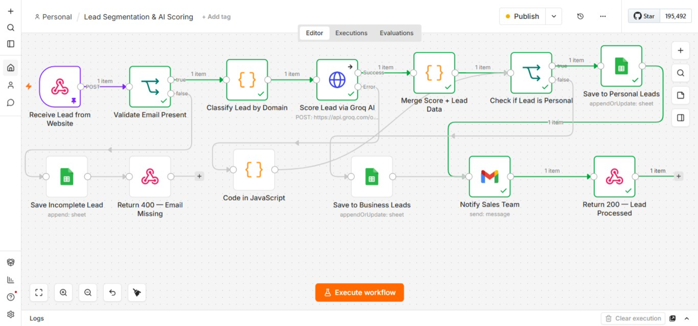

Lead Segmentation & AI Scoring
An n8n workflow that classifies incoming leads by domain type and scores their buying intent with AI, then routes each one to the right sheet and alerts the sales team instantly.
Tools & Integrations
Workflow in n8n

The Business Problem
When every lead gets the same priority, the sales team spends just as much time on low-intent inquiries as high-value prospects. No way to tell which is worth calling first without manual reading — time spent sorting instead of selling.
Why this matters: High-value leads wait in the same queue as everyone else. No prioritization = slower follow-ups on the people most likely to buy.
Solution Overview
A webhook captures every form submission. Validates email, classifies as Personal/Business, sends to AI for a 1-10 buying intent score, routes to correct Google Sheet, and notifies sales team instantly — no manual intervention.
Key Automation Steps
- 1Capture & Validate: Webhook receives lead. If email missing, logged as incomplete and 400 response returned.
- 2Classify by Domain: Checks domain against personal providers (Gmail, Yahoo, Outlook). Personal vs Business tag.
- 3AI Scoring: Sends details to Groq AI for a 1-10 buying intent score. If the call fails, the lead is flagged and still saved.
- 4Route & Notify: Personal leads go to one sheet, Business leads to another. Sales team gets an instant email with all details and score.
Reliability & Error Handling
Business Impact
Eliminates manual sorting. Hot leads get immediate follow-up. Sales team focuses on prospects most likely to convert first.